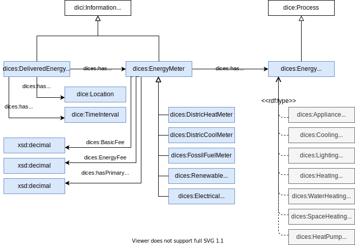

The figure below shows the main important classes of Digital Construction Energy ontology, related to energy systems and life cycle assessment.
The figure showds the energy meters for delivered energy and their relations energy consumption and its costs.
